5.1 CPU概述
5.1.1 CPU的功能
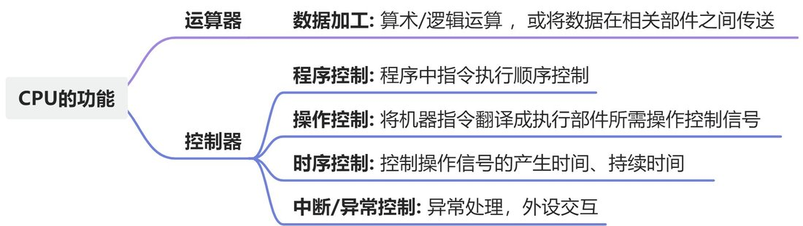
5.1.2 CPU的基本组成
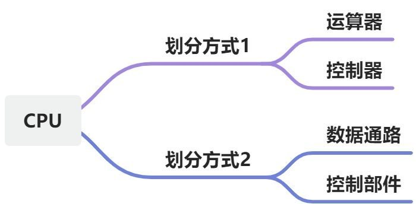
早期冯.诺依曼计算机的CPU主要由运算器和控制器两部分构成，现代CPU还增加了cache、MMU、浮点运算器等单元。
- 运算器
运算器主要由ALU、通用寄存器、程序状态字寄存器PSW等组成。其主要功能是根据控制器所发出的控制命令对数据进行加工、执行算术运算、逻辑运算或者逻辑测试。
- 算术运算:常见的加减乘除运算。
- 逻辑运算:与、或、非、异或等逻辑操作，以及移位、求补等操作。
- 逻辑测试:用作条件转移的判断条件，一般设置零标志位 ZF，符号标志位 SF，溢出标志OF，进/借位标志 CF。
【提示】:事实上，现代计算机运算器都实现了上面的功能，但是在408考试中，不是所有的运算器都具备上述的功能，例如有的运算器ALU 输出端需要连接移位器以便对输出进行移位操作，有的ALU输出端直接连接数据或者地址总线来传输运算结果。考生应该根据具体题目条件分析出运算器的相关结构。
- 控制器
控制器主要由控制单元(Control Unit，CU)、程序计数器(Program Counter，PC)、指令寄存器(Instruction Register,IR)、指令译码器(Instruction Decoder，ID)、存储器数据寄存器(MemoryData Register，MDR)、存储器地址寄存器(Memory Address Register，MAR)等组成，其主要功能包括取指令、计算下一条指令的地址、对指令进行译码、生成指令对应的操作控制信号序列、控制指令执行的步骤和数据流动的方向。
运算器 | 控制器 |
算术逻辑单元 ALU 通用寄存器 GPR 程序状态字寄存器 PSW 累加寄存器 ACC 移位器 计数器 暂存寄存器 | 控制单元 CU 程序计数器 PC 指令寄存器 IR 指令译码器ID 时序系统 微操作信号发生器 存储器数据寄存器 MDR 存储器地址寄存器 MAR |
下图为一种能实现上述功能的CPU基本组成(注意不同的指令系统、不同的硬件结构会存在较大的差异)，下面将分别介绍图中的各寄存器以及各功能部件的功能。
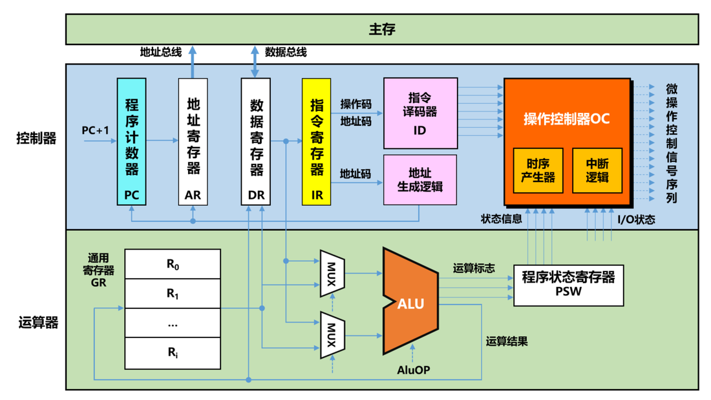
CPU中的寄存器
CPU中的寄存器的具体设置与指令集以及具体实现方式有较大关系，其中AR、DR、IR 寄存器并不是必需的，另外运算器内部的通用寄存器组GR和程序状态字寄存器PSW属于用户可见存储器，在汇编编程时可以直接使用。其他寄存器为控制器内部使用，用于控制指令的执行。
运算器中的寄存器
- 通用寄存器组(General Registers，GR)：是指运算器内部的若干寄存器，又称寄存器堆;通用的含义是指这些寄存器的功能有多种用途，可作为ALU的累加器、变址寄存器、基址寄存器、地址指针、数据缓冲器，用于存放操作数、中间结果以及各种地址信息等。
在Intel x86指令集中这些寄存器为EAX、EBX.EDX等，在MIPS 32指令集中这些寄存器为$0~$31，这些寄存器都对程序员可见,每个寄存器均有对应的地址编号,寄存器地址由指令字中的地址码部分提供。增加通用寄存器的数量，既可减少访问主存的次数，从而提高CPU的处理效率，又可以方便汇编编程以及编译器生成代码。
- 程序状态字寄存器(Program Status Word/Register，PSW/PSR)：保留由算数逻辑运算指令或测试指令的结果而建立的各种状态信息，如溢出标志（OF）、符号标志（SF）、零标志（ZF），进行标志（CF）等。通常条件分支指令利用PSW的值实现分支条件。
另外程序状态字寄存器还可用于保存中断和系统工作的状态信息，以便CPU 能及时了解计算机运行的状态，从而便于控制程序。不同类型的计算机可能设置不同的条件标志位和状态信息。Intel x86指令集中状态寄存器为EFLAGS，MIPS指令集中没有状态寄存器，所以其条件分支指令与x86指令有较大区别。
- 暂存寄存器：用于暂存从主存读过来的数据，该数据不能存放在通用寄存器中，否则会破坏其原有内容。暂存寄存器对应用程序员是透明的
提示:由于ALU运算时需要将两个输入端的操作数同时送入，若没有将读出的前一个操作数暂存起来，则第二个操作数在从内存中读出到总线时前一个操作数会被破坏，两个操作数无法同时到达ALU的两个输入端，ALU会输出错误的结果。
如：两个操作数分别来自主存和，最后结果存回， 那么从主存中取来的操作数直接放入暂存器，就不会破坏运算前的内容。
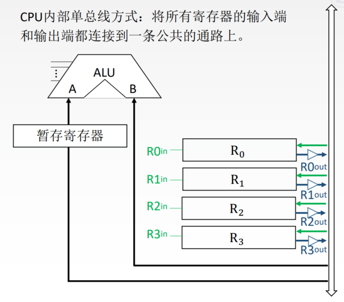
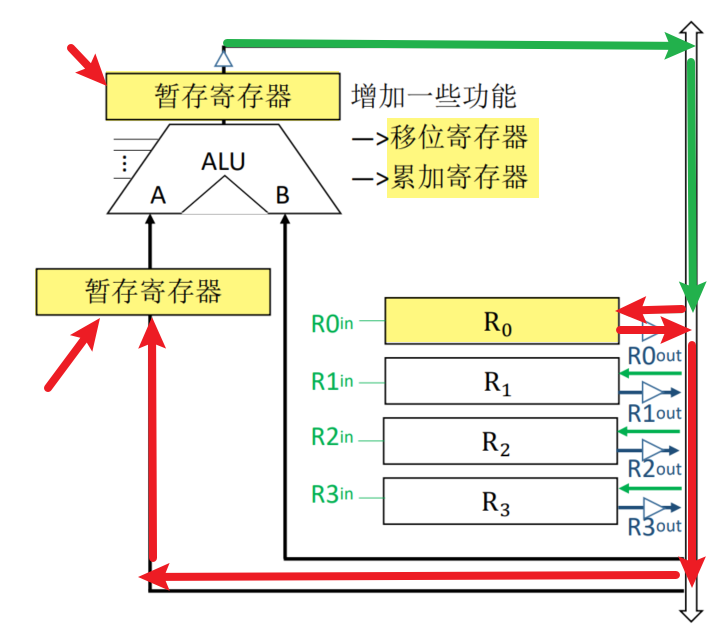
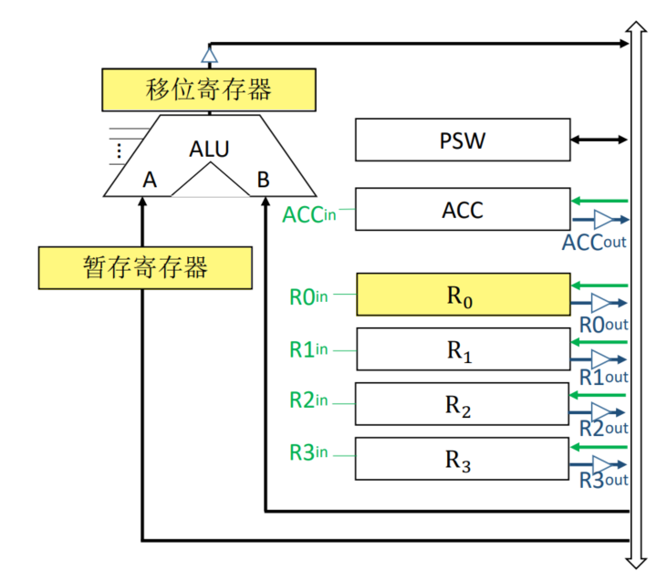
- 累加寄存器ACC：它是一个通用寄存器，用于暂时存放ALU的运算结果，可以作为加法运算的一个输入端
- 移位寄存器SR：在控制信号的作用下对操作数或运算结果进行移位运算
- 计数器：控制乘除运算的操作步数
控制器中的寄存器
- 程序计数器(PC)：保存欲执行指令在主存储器中的存放地址，Inter x86系列中称为指令指针寄存器（Instruction Pointer,IP）。PC位宽一般与主存地址总线位宽相等。CPU 根据 PC的内容从主存储器中取指令，然后送入指令寄存器。指令通常是顺序执行的，因此 PC具有自动加1的功能(这里的“1”是指一条指令的字节数)（注意变长指令系统中指令的字节长度需要指令译码后才能确定）;当遇到转移类指令时，PC 的新值由指令计算得到。
- 指令寄存器(Instruction Register，IR)：用于保存当前正在执行的指令，其位宽和指令字相同。
- 指令字由指令译码器(ID)翻译成若干个指令译码信号(每一个指令译码信号表示一条不同的指令，同一时刻只有一个信号有效)。
- 指令字中的地址码部分由地址生成逻辑对寻址方式进行译码并生成目标地址或数据，根据寻址方式的不同将目标地址送入程序计数器PC、地址寄存器MAR或运算部件。
- 有的计算机将指令寻址方式暗含在操作码字段中，有的计算机将操作码和地址码一并送入指令译码器，有的计算机将操作码和地址码一并送入地址生成逻辑，以决定地址码的作用。操作控制器根据指令译码信号生成最终的控制信号序列控制各功能部件进行相应动作。
- 存储器地址寄存器(MAR)：用于存放要访问的主存储器单元的地址，MAR位宽等于主存地址总线位宽，它反映了最多可寻址的存储单元的个数。无论CPU是取指令还是操作数，都必须先将地址送到MAR，直到读写操作完成。
注意：MAR不是必需的，部分计算机可直接将访存地址加载在地址总线上实现访存。
- 存储器数据寄存器(MDR)：用于存放向主存储器写入的信息或从主存储器读出的信息，
MDR 的位数=存储字长=机器字长。（不一定，这是一般情况下）MDR作为CPU 和主存之间的缓冲寄存器也可用于存放运算器ALU的操作数、运算结果或中间结果，以减少访问主存的次数。同样，MDR作为存储器的访问接口也不是必需的，具体与CPU结构有关。
操作控制器
取指令，将机器指令译码并生成执行部件所需的控制信号序列 ，控制信号按序送至各执行部件控点，引起逻辑门开闭，建立正确的数据通路，从而完成指令功能。
详情
操作控制器接收指令译码器(ID)送来的指令译码信息，与时序信号、条件及状态信息进行组合，形成各种具有严格时间先后顺序的操作控制信号(即微操作控制信号序列)，并连接到计算机各功能部件的控制端，控制相应部件按指令的功能依序进行动作，从而实现指令的功能。
CPU 执行指令的过程就是CPU 控制信息流的过程，操作控制器是控制的决策机构，其产生的微操作控制信号序列就是控制流。信息流的控制就是将操作控制器生成的微操作控制信号序列送到各功能部件的控制门、多路选择器、触发器或锁存器处，依时间先后顺序打开或关闭某些特定的门电路，使数据信息按完成指令功能需要经过的路径一数据通路从一个功能部件传送到另一个功能部件，实现对数据加工处理的控制。
时序产生器
指令执行过程中的所有操作都必须按照一定的次序执行，各操作在什么时刻执行、执行多长时间都有严格的规定，不能有任何差错。例如，执行加法指令时，必须先将操作数送到 ALU的输入端，然后给出ALU执行加法的运算选择控制信号，待加法操作完成后，才能将结果送往目的地。不仅对执行的先后次序有规定，而且对什么时刻送操作数、什么时刻执行加法操作、什么时刻送出结果也有规定。因此需要引入时序的概念，也就是要对完成指令而执行的微操作控制信号进行时间调制，严格规定各信号的产生时间和持续时间。
5.2 指令周期
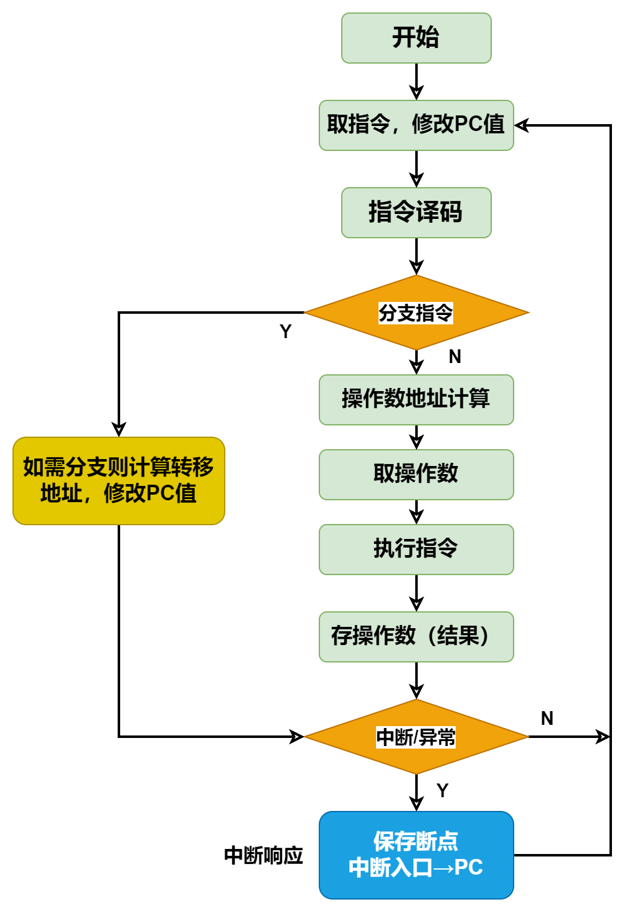
指令周期基本概念
- 指令周期：从主存取一条指令并执行指令的时间
- 取指令周期、执行指令周期 （间址周期、中断周期）
- 执行周期包含0~n个机器周期，机器周期包含k个节拍
N取决于指令功能，寻址方式，指令执行结束时是否有中断? K取决于机器周期的长度。K可以=1
- 机器周期 = CPU周期 从主存读出一条指令的最短时间 可完成复杂操作
- 一个指令周期可分为取指令、读操作数、执行并写结果等多个基本工作周期,称为机器周期。有取指令、存储器读、存储器写、中断响应等类型的机器周期。
- 每个机器周期长短可能不同,例如,存储器读或写周期比 CPU中的操作时间长得多。所以,机器周期的宽度通常以主存工作周期为基础来确定。
- 时钟周期 = 节拍脉冲 = 震荡周期 能完成一次微操作
一个机器周期内要进行若干步动作。例如,存储器读周期有送地址、发读命令、检测数据有无准备好、取数据等。因此,有必要将一个机器周期再划分成若干节拍,每个动作在一个节拍内完成
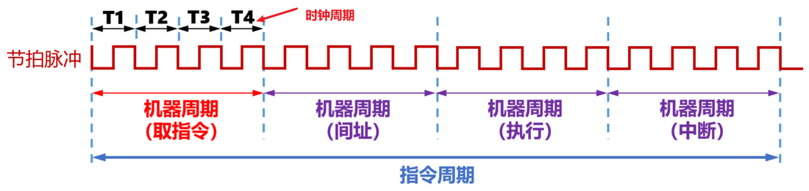
不同指令的指令周期可能不同，例如
- 空指令NOP：空指令的意思就是什么也不做，因此其指令周期就是取指周期
- 无条件转移指令JMP：只包含取指和执行阶段，因此其指令周期仅包含取指周期和执行周期
- 具有间接寻址的指令：间接寻址需要多次访问主存才能取到操作数的地址，因此它会多一个间址周期
- 带有中断周期的指令：在指令结束之后若有中断请求，则CPU进入中断响应阶段，即中断周期
因此，一个完整的指令周期包括取指。间址、执行和中断四个周期
指令周期的数据流
取指周期
取指周期的信号是通过控制信号发生器中的微程序控制器生成的，微程序控制器中保存了很多段微程序，其 中就有一段叫做公共取指微程序，在取指周期到来时，微程序控制器读取公共取指微程序，根据微程序在每个时钟周期发送相应的信号。
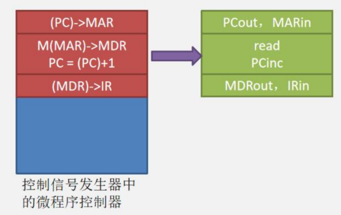
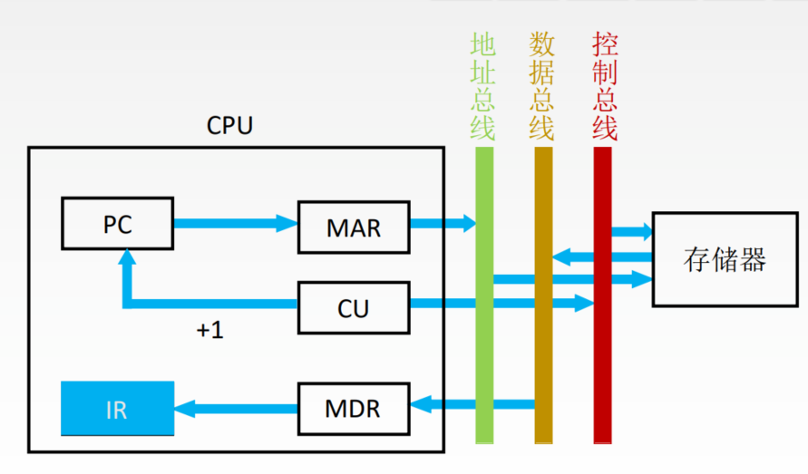
数据流向：
- 当前指令地址送至存储器地址寄存器，记做：(PC) → MAR
- 将MAR所指主存中的内容经数据总线送入MDR，记做：M(MAR) → MDR
- CU发出控制信号，经控制总线传到主存，这里是读信号，记做：1 → R
- 将MDR中的内容(此时是指令)送入IR，记做：(MDR) → IR
- CU发出控制信号，形成下一条指令地址，记做：(PC)+1 → PC
控制信号：
取指周期的目的就是在此期间内从存储器中读出指令。我们假设存储器准备一个数据也需要1个时钟周期。 当进入取指周期后，控制信号形成部件会根据时钟信号，在三个时钟周期内发送三段控制信号。
- 控制信号发生器在第一个时钟周期先发出PCout和MARinE信号，PC将数据放到总线上，同时MAR从总线上读取 信号
- 控制信号发生器在第二个时钟周期发出read信号和PCinc信号。存储器收到read信号后，从MAR读取地址，将数据送入MDR中，PC收到信号PCinc后PC自增。
- 控制信号发生器在第三个时钟周期发出MDRout，IRin信号，MDR收到后将数据放入总线，IR从总线上接收信号。
时钟周期 | 数据通路（数据流） | 控制信号（控制流） |
C1 | (PC) → MAR | PCout，MARin |
C2 | M(MAR) → MDR (PC)+1 → PC | read，PCinc（PC+1） MDRinE |
C3 | (MDR) → IR | MDRout，IRin |
机器周期与总线事务的关系
总线事务：数据流通过总线在处理器和DRAM主存之间来来回回。每次CPU和主存之间的数据传送都是通过一 系列步骤来完成的，这些步骤称为总线事务。其主要有读事务和写事务。
eg： CPU想要访问地址000010H中的数据。
- CPU跟总线控制器申请总线控制权，总线控制器将总线控制权给到CPU。
- CPU将地址送进MAR，并经过总线送到主存控制器。主存控制器收到地址后启动DRAM准备数据。
- 数据准备完毕后将数据发送到MDR。MDR将数据发送到需要的地方如IR。
取指周期
- PC将数据给到MAR
- 主存根据MAR中的地址，将对应的数据给到MDR
- MDR将数据给到IR
注意：如果这个机器周期有访存操作，则这个机器周期可以和总线事务划等号。
间址周期
经过取指周期后，CPU将指令放入IR中，控制信号发生器根据IR的操作码字段分析出源操作数采用间址寻址， 从而进入间址周期。微程序控制器根据操作码字段分析，得出间址周期和执行周期的微程序，但在间址周期 只执行间址周期的微程序。
注意：取指周期的微程序是微程序控制器直接提供，间址周期的微程序是根据操作码字段分析得出。
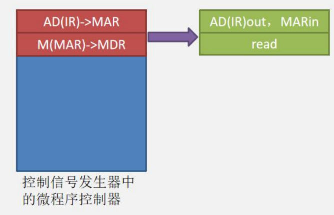
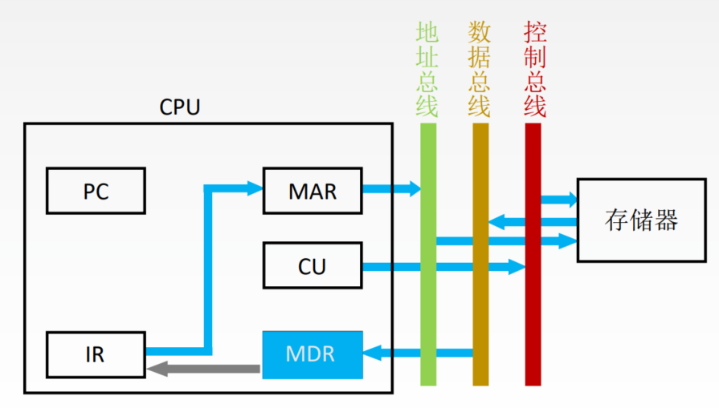
目的：取出操作数的有效地址
以指令MOV R1，05H为例，其中源操作数05H采用间址寻址。
数据流向
- 将指令的地址码送入MAR，记做：Ad(IR) → MAR或Ad(MDR) → MAR
- CU发出控制信号，启动主存做读操作，记做：1 → R
- 将MAR所指主存中的内容经数据总线送入MDR，记做：M(MAR) → MDR
- 将有效地址送至指令的地址码字段或者直接送往MAR，记做：(MDR)→ Ad(IR)或(MDR)→MAR
控制信号
- 控制信号发生器在第4个时钟周期先发出AD(IR)out，MARin信号，IR将形式地址放到总线上，同时MAR从总线上读取形式地址
- 控制信号发生器在第5个时钟周期发出read信号。存储器收到read信号后，从MAR读取地址，将数据送入MDR 中。
- 控制信号发生器在第6个时钟周期发出MDRout，MARin信号，MDR收到后将数据放入总线，MAR从总线上读取有效数据地址。
时钟周期 | 数据通路（数据流） | 控制信号（控制流） |
C4 | Ad(IR) → MAR | AD(IR)out，MARin |
C5 | M(MAR) → MDR | read,MDRinE |
C6 | (MDR)→MAR | MDRout,MARin |
执行周期
执行周期的任务是根据IR中的指令字的操作码和操作数通过ALU操作产生执行结果。 不同指令的执行周期操作不同，因此没有统一的数据流向。
这里同样以指令MOV R1，05H为例，其中源操作数05H采用间址寻址。在间址周期根据形式地址取到了有效地址，执行周期将有效地址中的数据给到R1。
执行周期的控制信号同样是进入间址周期前，根据控制信号发生器分析指令的操作码字段得来的。微程序控制器会在进入间址周期前生成的间址周期和执行周期的微程序。当时钟进入执行周期时，启动执行周期的微程序
注意：不论是间址周期的微程序还是执行周期的微程序，都是在取指周期过去后，译码器分析指令操作码统一得到的
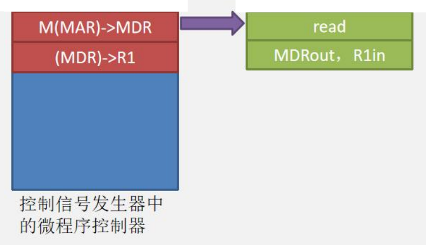
控制信号
- 控制信号发生器在第7个时钟周期发出read信号。存储器收到read信号后，从MAR读取地址，将数据送入MDR 中。
- 控制信号发生器在第8个时钟周期发出MDRout，R1in信号，MDR收到后将数据放入总线，R1从总线上接收信号。
时钟周期 | 数据通路（数据流） | 控制信号（控制流） |
C7 | M(MAR) → MDR | read，MDRinE |
C8 | (MDR)→R1 | MDRout,R1in |
中断周期
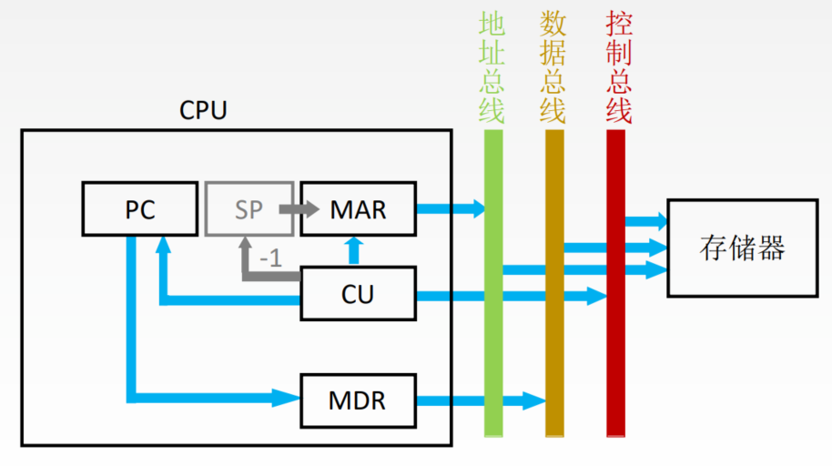
中断：暂停当前任务去完成其他任务。 为了能够恢复当前任务，需要保存断点。 一般使用堆栈来保存断点，这里用SP表示 栈顶地址，假设SP指向栈顶元素，进栈操作是先修改指针，后存入数据。
1.CU控制将SP减1，修改后的地址送入MAR
记做:(SP)-1 →SP，(SP)→MAR 本质上是将断点存入某个存储单元，假设其地址为a，也可记做:a→MAR
2.CU发出控制信号，启动主存做写操作，记做:1→W
3. 将断点(PC内容)送入MDR，记做:(PC)→MDR
4.CU控制将中断服务程序的入口地址 (由向量地址形成部件产生)送入PC，
记做:向量地址→PC
5.3 数据通路
5.3.1 数据通路的概述
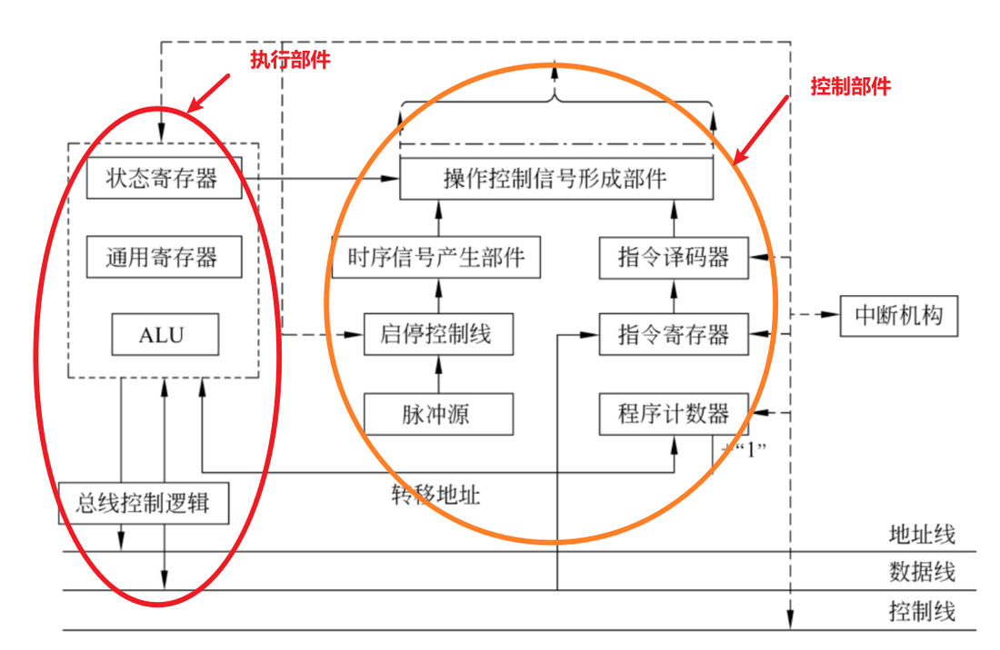
上图地址线、数据线和控制线的解释
注意：上图中的地址线、数据线和控制线并不属于 CPU，构成系统总线的这三组线主要用来使 CPU与CPU外部的部件（主要是主存储器）交换信息，交换的信息包括地址、数据和控制三类，分别通过地址线、数据线和控制线进行传送，这里，数据信息包含指令，也即数据和指令都看成是数据，因为对总线和存储器来说，指令和数据在形式上没有区别，而且数据和指令的访存过程也完全一样。除了地址和数据（包括指令）以外的所有信息都属于控制信息。地址线是单向的，由CPU送出地址，用于指定需要访问的指令或数据所在的存储单元地址。
随着超大规模集成电路技术的发展,更多的功能逻辑被集成到CPU芯片中,包括cache、MMU、浮点运算逻辑、异常和中断处理逻辑等,因而CPU 的内部组成越来越复杂,甚至在一个CPU 芯片中集成了多个处理器核。但是,不管CPU多复杂,它都可看成由数据通路(datapath)和控制部件(control unit)两大部分组成。
通常将指令执行过程中数据所经过的路径,包括路径上的部件称为数据通路。
- 重要ALU、通用寄存器、状态寄存器、cache、MMU、浮点运算逻辑、异常和中断处理逻辑等都是指令执行过程中数据流经的部件,都属于数据通路的一部分。
- 通常把数据通路中专门进行数据运算的部件称为执行部件(execution unit)或功能部件(function unit)。
- 数据通路由控制部件进行控制。控制部件根据每条指令功能的不同生成对数据通路的控制信号,并正确控制指令的执行流程。
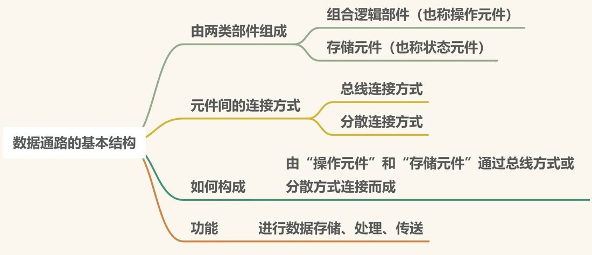
5.3.2 数据通路的组成
5.3.2.1 组合逻辑部件（操作元件）
组合逻辑元件的输出只取决于当前的输入，组合电路不含存储信号的记忆单元。组合电路的定时不受时钟信号的控制,所有输入信号到达后,经过一定的逻辑门延迟,输出端的值被改变,并一直保持其值不变,直到输入信号改变。
特点：
- 其输出只取决于当前的输入，与电路原来的状态无关，因此，它没有存储功能。即：输入一样，其输出也一样
- 定时：所有输入到达后，经过一定的逻辑门延时，输出端改变，并保持到下次改变，不需要时钟信号来定时
时钟信号长度的确定：下图描述了⼀个组合逻辑单元及与其相连的两个状态单元。组合逻辑单元的操作在⼀个时钟周期内完成，所有信号在⼀个时钟周期内从状态单元1经组合逻辑到达状态单元2，信号到达状态单元2 所需的时间决定了时钟周期的⻓度。
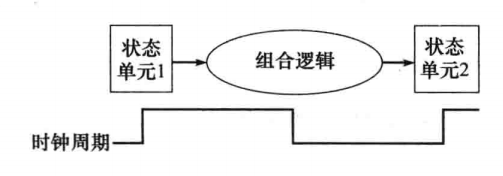
如何确定 CPU 的时钟周期？
在一个边沿触发的同步数字系统中，一个状态量的改变总是在时钟的上升沿或下降沿发生，我们称上升沿或下降沿的到来为时钟有效信号到达。 一个状态量的改变必须满足以下三个条件：
(1) 新写入的数据已经生成并稳定在状态单元的输入端；
(2) 写使能信号有效；
(3) 时钟有效信号到达。
在前面两个条件满足的情况下，一旦时钟有效信号到达，则输入数据开始写入状态单元，经过一定的延迟后，状态单元的输出变为新输入的数据。因此，要使电路正确工作，必须让新写入的数据在时钟有效信号到达前稳定在输入端——即：时钟周期必须足够长，使得状态单元之间的组合逻辑电路有充足时间生成新数据。
最终，时钟周期的确定基准是“所有相邻状态单元之间组合逻辑电路的最长延时”（真题选项原话）：只有以该最长延时为依据，才能保证一个时钟周期内，所有组合电路都完成必要的数据处理，使下个时钟到来时，数据能可靠存储在状态单元中。
数据通路中常用的组合逻辑元件有多路选择器(MUX)、加法器(Adder)、算术逻辑部件(ALU)、译码器(Decoder)、三态门、符号扩展单元等,其符号表示如图所示。
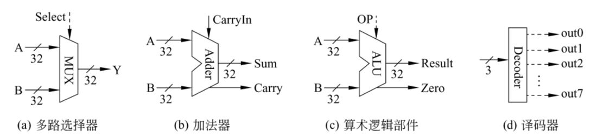
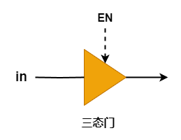
图中虚线表示控制信号,
- 多路选择器MUX需要控制信号select确定选择哪个输入被输出;
- 加法器不需要控制信号控制,因为它的操作是确定的;仅完成与地址有关的加法运算，如顺序指令地址PC+4和分支目标地址的计算。
- ALU 需要有操作控制信号 op,由它确定ALU 进行哪种操作;
- 译码器通过对指令操作码进行译码,输出译码后得到的控制信号out0、out1、....,译码器无须控制信号进行控制。n位输入对应种不同组合，因此有个不同输出
- 三态门可视为一种控制开关，由控制信号EN 决定信号线的通断，当EN=1时，三态门被打开，输出信号等于输入信号;当EN=0时，输出端呈高阻态(隔断态)，所连寄存器与总线断开。
- 符号扩展单元： MIPS32指令集中指令字中的立即数字段为16位。符号扩展单元的功能就是将16位的立即数符号扩展成32位以便运算器进行运算，具体扩展的方法就是将16位立即数的最高符号位复制到高位。
【具体介绍】
- 多路选择器MUX
定义：一个有 2n 输入端的多路选择器有 n 个可选择的输入－输出线路，可以通过控制端来选择其中一个信号被选择作为输出。
如图是一个简单的多路选择器（MUX），有两个输入端和一个输出端，并有一个控制端，是二选一的多路选择器，每个输入端和输出端都有n位，因此，这样的多路选择器称为二路选择器。 其功能是∶当S为0时，F=A;当S为1时，F=B。
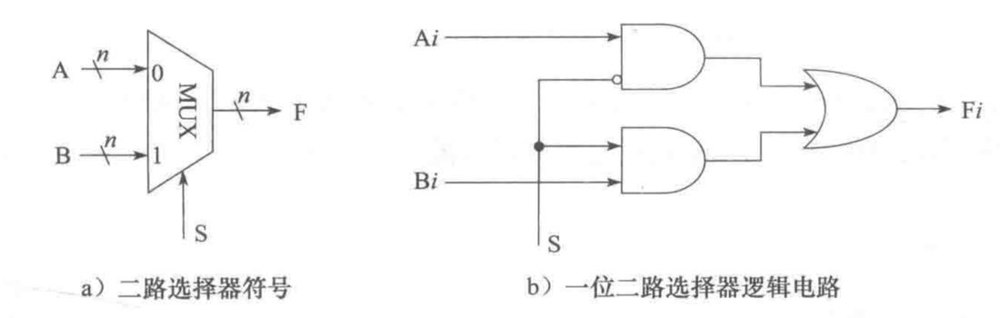
推广到k路选择器，应该有k路输入，因而控制端S的位数应该是。例如，对于3 路或4路选择器，S有两位;对于5-8路选择器，S有3位。
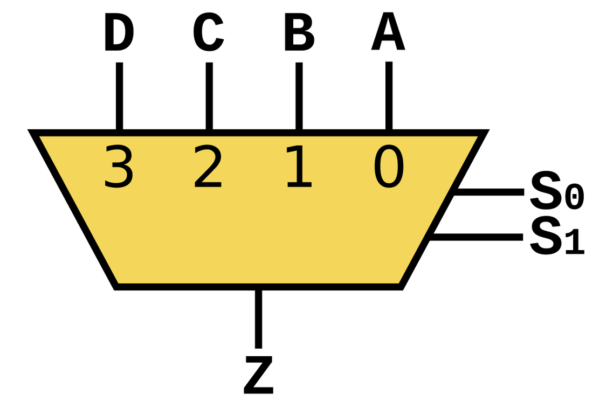
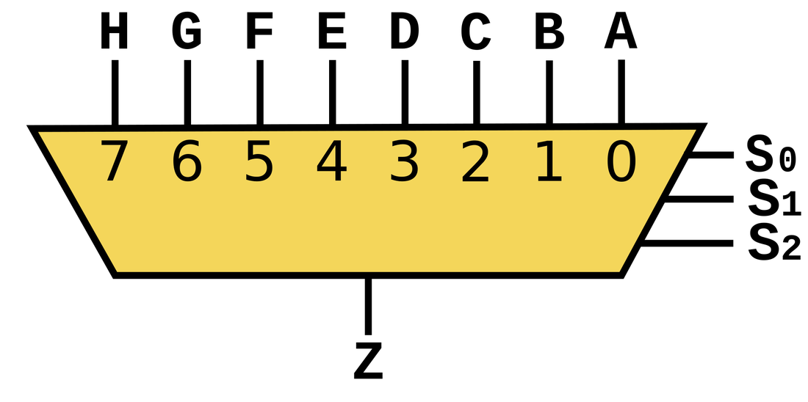
- 译码器
通常，若译码器的输人端有 位，则其输出端有位。假定输入端分别为 输出端分别为
位，则其输出端有位。假定输入端分别为 输出端分别为 。如果将输入的n位看成一个二进制数，则n位输入的可能取值 为0，1，2，…，，。若输入对应的二进制值为
。如果将输入的n位看成一个二进制数，则n位输入的可能取值 为0，1，2，…，，。若输入对应的二进制值为  ，则输出端中只有
，则输出端中只有  为1，其他输出端全为0。 如，当n=3时，有3个输入端，8个输出端，对应的译码器称为3- 8译码器，其符号和真值表如图所示。
为1，其他输出端全为0。 如，当n=3时，有3个输入端，8个输出端，对应的译码器称为3- 8译码器，其符号和真值表如图所示。
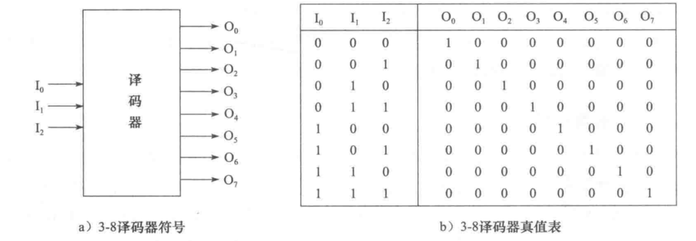
译码器可以用来对地址码进行译码，例如，在主存储器组织中有地址译码器，它能对地址寄存器传送过来的地址进行译码，输出信号用来驱动地址码对应的地址选对所在主存单元进行读写。同样，译码器也可以用于对指令的操作码进行译码，使不同的操作码能够得到不同的控制信号，以正确控制操作元件的动作。
- ALU
5.3.2.2 时序逻辑元件（状态元件）
特点：
- 任何时刻的输出不仅与该时刻的输入有关，还与该时刻以前的输入有关，因而时序电路必然包含存储信号的记忆单元。
- 具有存储功能，在时钟控制下输入被写到电路中，直到下个时钟到达
- 此外，时序电路必须在时钟节拍下工作。输入端状态由时钟决定何时被写入，输出端状态随时可以读出
各类寄存器和存储器，如通用寄存器组、程序计数器、状态/移位/暂存/锁存寄存器等，都属于时序逻辑元件。
简而言之，如果一个单元带有内部存储功能，称之为状态单元。如指令存储器，数据存储器和寄存器都是状态单元！
定时方式：规定信号何时写入状态元件或何时从状态元件读出
边沿触发（edge-triggered）方式：状态单元中的值只在时钟边沿改变。每个时钟周期改变一次。
- 上升沿（rising edge） 触发：在时钟正跳变时进行读/写。
- 下降沿（falling edge）触发：在时钟负跳变时进行读/写。
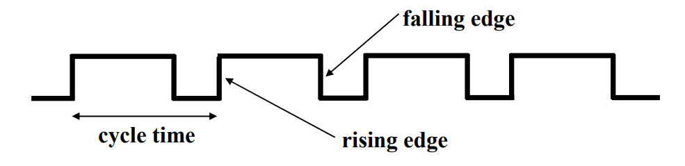
最简单的状态单元：D触发器：一个时钟输入、一个状态输入、一个状态输出
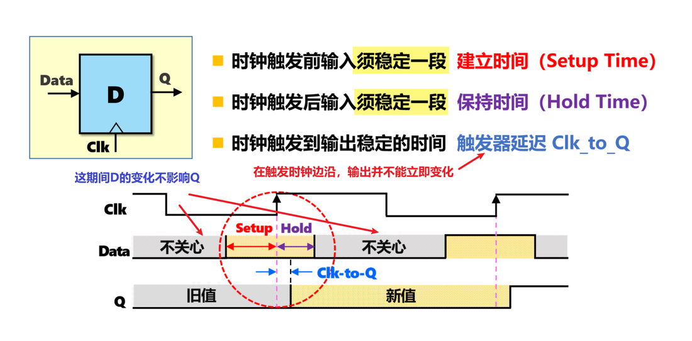
切记：状态单元的输入信息总是在一个时钟边沿到达后的“Clk-to-Q” 时才被写入到单元中，此时的输出才反映新的状态值
数据通路中的状态元件有两种：寄存器(组) + 存储器
5.3.2.2.1 存储元件：寄存器和寄存器组
数据通路中的寄存器是一种典型的状态存储元件,由n个D触发器可构成一个n 位寄存器。根据功能和实现方式的不同,有各种不同类型的寄存器。例如:
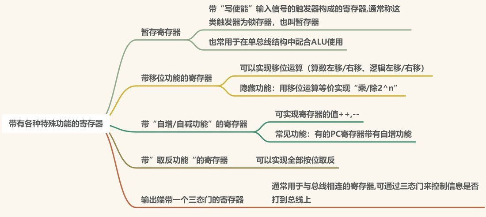
这些不同类型的寄存器都在时钟信号和相应控制信号(如“写使能”、“三态门开”、“清零”、“自增”、“左移/右移”)的控制下完成信息存储功能。当然,也可以将上述功能组合起来构成寄存器。
- 寄存器（Register）
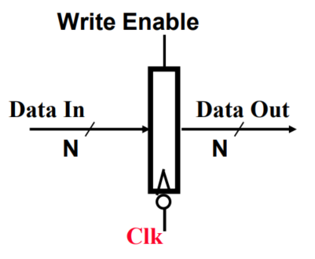
- 有一个写使能（Write Enable-WE）信号
- 0: 时钟边沿到来时，输出不变
- 1: 时钟边沿到来时，输出开始变为输入
- 若每个时钟边沿都写入，则不需WE信号
- 寄存器组（Register File）(2022年真题)
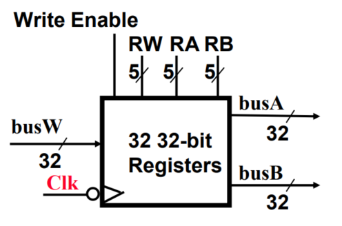
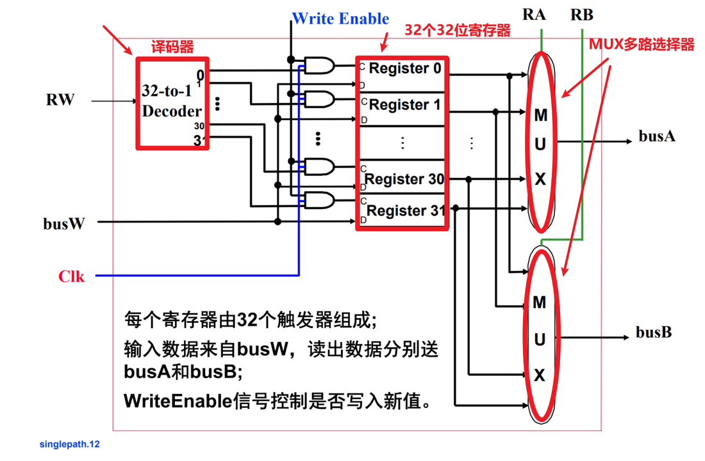
- 两个读口（组合逻辑操作）：无须时钟控制，busA和 busB分别由RA和RB给出地址。地址RA 或RB有效后，经一个“取数时间(AccessTime)”，busA和busB有效。
- 一个写口（时序逻辑操作）：需要时钟控制。写使能为1 的情况下，时钟边沿到来时，busW传来 的值开始被写入RW指定的寄存器中。
具体原理
上图是寄存器堆的结构示意图。内部有32个32位的寄存器，它有三组数据接口：其中busA和busB是两组32位的数据输出接口，busW是一组32位的数据输入接口，这也体现了“两读一写”的特性。
那么如何对寄存器堆进行读写呢？那就需要来看几组读写控制信号。首先是Ra，这是一个5位的信号，5位的信号正好可以选择编号0～31的寄存器。因此，寄存器堆会根据Ra的输入，选择对应编号的寄存器，将其内容放到busA信号上；然后是Rb信号，同样，寄存器堆也会根据Rb的输入，选中其对应编号的寄存器，将内容放到busB信号上。这样外界将两个编号分别放到Ra和Rb的信号输入中，寄存器堆就会将对应寄存器的内容分别放到busA和busB的信号线上。这就完成了同时读取两个寄存器的功能。
而对于写，稍微复杂一些。首先，将要写的寄存器的编号，通过Rw信号先输入，在时钟的上升沿，如果写使能信号是有效的，也就是WriteEnable信号等于1，那么寄存器堆就会将busW信号上的内容存入Rw信号所指定的寄存器，这就是寄存器堆所提供的写的功能。我们需要注意的是寄存器堆的“写"是在时钟上升沿完成的，但是寄存器堆的"读"是不受时钟控制的。也就是说，在任何时候，只要 Ra 或者 Rb 发生了变化，那对应的 busA 和 busB 的信号就会发生变化。
- 执行寄存器写相关指令时,指令中的寄存器编号被送到一个地址译码器进行译码,选中某个寄存器进行写入，读出时寄存器编号作为控制信号来控制一个多路选择器,选择相应的寄存器读出。
- 译码器和多路选择器的区别：译码器是翻译后输出自己的结果，而多路选择器是选择输入后输出。
- 多路选择器是一种能够从多个输入信号中选择一个输出的信号转换设备。在寄存器堆中，多路选择器通常用于在多个寄存器中进行选择一个输出。一个典型的多路选择器如4选1多路选择器，它有四个数据输入端、两个选择输入端以及一个数据输出端。通过设置选择输入端的值，可以决定哪一个数据输入端被连接到数据输出端。
- 译码器是一种将二进制编码转换为一组特定输出信号的设备。在寄存器堆中，译码器常常用于地址译码，从而控制对特定寄存器的访问。例如，一个3-8译码器可以将3位二进制输入代码转换为8个输出线信号中的一个，这样便可以选中8个寄存器中的一个写入。
- 寄存器写信号(register write)
寄存器堆中的寄存器是由触发器构成的,而触发器的输出状态的变化只能发生在时钟边沿,因此寄存器写控制信号在时钟边沿有效。时钟边沿到来时,事先稳定在输入端的数据开始向寄存器写入,经过一段时间延迟(这个延迟时间称为 Click-to-Q)才能稳定地写入到寄存器并输出,因此,时钟边沿到来时,在寄存器输出端的数据实际上还是上一个时钟周期内的老数据。
5.3.2.2.2 存储元件：理想存储器
- Data Out：32位读出数据
- Data In： 32位写入数据
- Address：读写公用一个32位地址
- 读操作：地址Address有效后，经一个“取数时间 AccessTime”，Data Out上数据有效。
- 写操作 ：写使能为1的情况下，时钟Clk边沿到来时，Data In传来的值开始被写入Address指定的存储单元中。
为简化数据通路操作说明，把存储器简化为带时钟信号 ，把存储器简化为带时钟信号 Clk的理想模型。
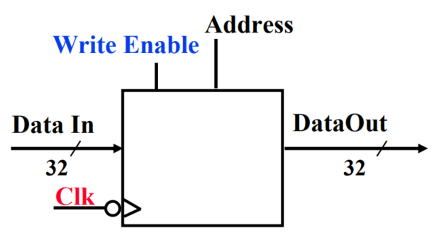
具体原理解释
存储器有两组数据接口信号，有32位的数据输入和32位的数据输出。那存储器的读写实际上和寄存器堆有些类似，只要我们给入一个地址，存储器就会将对应的存储单元中的数送到数据输出信号上。而与寄存器堆不同在于，我们只给入一组地址信号，而不是寄存器堆所提供的两组寄存器编号的输入。从这个意义上，我们也可以说，这个存储器是一个一读一写的存储器。
另一个方面，我们给入的地址信号是32位的。所以，理论上这个存储器可以达到2的32次方那么大，当然这只是一个理想化的情况。那么对于存储器的写，我们也提供了一个写使能的信号，在时钟上升沿到来的时候，如果写使能信号为1，那么存储器就会将数据输入信号的内容存入地址信号所指定的存储单元。
同样我们也需要注意，存储器的”写“操作是在时钟上升沿的时候发生的，而存储器的”读“操作则不受时钟信号的控制。只要输入的地址信号发生变化，经过很短的访问时间，数据输出信号就会随之发生变化。
5.3.3 数据通路的基本结构
5.3.3.1 CPU内部单总线方式（⭐⭐⭐⭐）
将ALU及所有寄存器都连接到一条内部公共总线上，称为单总线结构的数据通路。这种结构比较简单，但数据传输存在较多的冲突现象，性能较低。此总线在CPU 内部，注意不要把它与连接CPU、存储器和外设的系统总线相混淆。如下图所示为单总线的数据通路和控制信号。
由于采用单总线结构，因此图中运算器ALU采用了两个暂存寄存器X、Z（对程序员而言是透明的，是临时存储单元）。其中X用于暂存ALU 的操作数A，ALU的另一个操作数B来自内总线;Z用于暂存运算结果。PSW寄存器为程序状态寄存器，用于存放ALU的运算状态标志，暂存状态标志将送入操作控制器。寄存器堆Regs 包括一组通用寄存器，可对指定编号的寄存器进行读写操作，其中 R#端口为输出寄存器编号，W#端口为写入寄存器编号。
PC、MAR、MDR、IR、X、Z寄存器和寄存器堆Regs均直接与内总线相连;另外MAR、MDR寄存器还通过外总线与存储器MEM相连;假设图中所有寄存器、存储器的数据位宽均为32位，写入操作都受统一时钟控制，上跳沿有效。
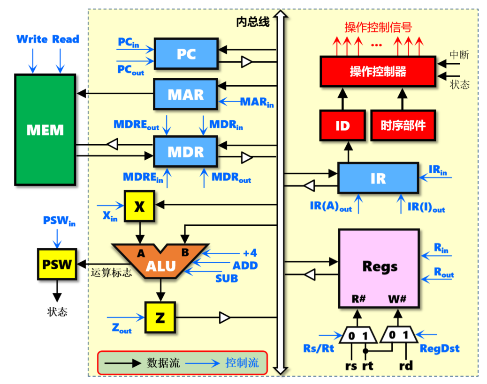
在总线结构中，可同时进行的数据传输数量取决于总线的数量。对单总线结构而言，总线上可以有多个模块同时接收数据，但某一时刻只能有一个模块向总线发送数据，否则会出现数据冲突。因此,连接到总线上的部件都需要进行输出控制，以防止总线上出现数据冲突。为此，图中所有向内总线输出的功能部件都采用三态门进行输出控制(图中用三角形空心箭头表示)。图中蓝色标识的控制信号的具体功能与作用如下表所示。
注意：单周期处理器(CPI=1)不能采用单总线方式，因为单总线将所有寄存器都连接到一条公共总线上,一个时钟内只允许一次操作，无法完成一条指令的所有操作。
控制信号 | 作用说明 |
、、、、、、 | 控制三态门将寄存器值输出到总线 |
、、、、、、 | 控制寄存器使能端将总线数据锁存（时钟驱动） |
、、 | 运算控制信号 |
、 | 内存读写控制信号（写操作需要时钟驱动） |
控制MDR接收从主存读出的数据，需配合时钟控制 | |
控制MDR向主存输出数据，以便最后将该数据写入主存 | |
控制PSW接收ALU的运算状态，需配合时钟控制 |
有个别信号再单独介绍下：
控制信号 | 作用说明 |
| 控制暂存器 Z 向总线输出数据，注意暂存器 Z 没有输入控制，每个时钟都会锁存新值 |
| 控制 IR 接收来自内总线的指令，需配合时钟控制 |
| 控制 IR 中的分支目标地址输出到内总线，指令字中的立即数要转换成目标地址，需要相应逻辑 |
| 控制 IR 中的立即数输出到内总线，指令字中的立即数符号扩展为32位才能输出 |
| 控制寄存器堆接收来自内总线的数据，写入 W# 端口对应的寄存器中，需配合时钟控制 |
| 控制寄存器堆输出指定寄存器 R# 的数据，该寄存器堆为单端口输出 |
| 控制多路选择器送入 R# 的寄存器编号，为0时送入指令字中的 rs 字段，为1时送入 rt 字段 |
| 控制多路选择器送入 W# 的寄存器编号，为0时送入指令字中的 rt 字段，为1时送入 rd 字段 |
总线是一组共享的传输信号线，它不能存储信息，任一时刻也只能有一个部件把信息送到总线上。下面以下图所示的单总线数据通路为例，介绍一些常见操作的流程及控制信号。
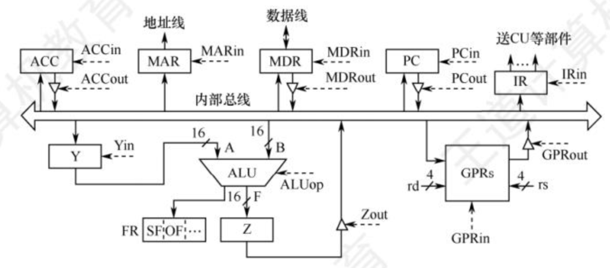
- 通用寄存器之间传送数据
在寄存器和总线之间有两个控制信号:Rin和Rout。当Rin有效时，控制将总线上的信息存到寄存器R中;当Rout有效时，控制将寄存器R 的内容送至总线。下面以程序计数器PC为例，将PC的内容送至MAR。实现该操作的流程及控制信号为
寄存器输入输出与三态门具体原理
下图中,D触发器的数据输入端连到一个二路多选器,当控制信号时,选择总线上的信息输入到 D触发器的输入端，当时钟信号的触发沿到达时,被装入到触发器中;当时,触发器的值不变。D触发器的输出端通过一个三态门与总线相连,当控制信号时,三态门被打开,触发器的输出被送到总线上;当时,则三态门的输出端呈高阻态,触发器与总线断开。
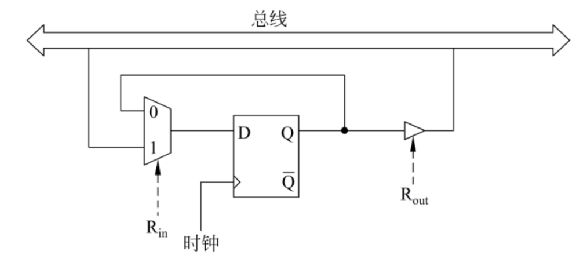
(PC)→MAR PCout和MARin有效，PC内容→MAR- 从主存读取数据
从主存中读取的信息可能是数据或指令，现以CPU从主存中取指令为例，说明数据在单总线数据通路中的传送过程。实现该操作的流程及控制信号为
(PC)→MAR PCout和 MARin有效，现行指令地址→MAR
M(MAR)一MDR，(PC)+1→PC MDRin有效，CU发出读命令，取出指令后PC+1
(MDR)→IR MDRout和IRin 有效，现行指令→IR- 第一步，将 PC的内容通过内部总线送至 MAR，需要1 个时钟周期。
- 第二步，CU 向主存发出读命令，从MAR所指主存单元读取一个字，并送至MDR;同时PC加1为取下一条指令做准备，需要1个主存周期。
- 第三步，将MDR的内容通过内部总线送至IR， 需要1个时钟周期。
注意：通常,从主存读取一个字的时间比在 CPU 内部进行一个操作所花费的时间要长得多,需要多个时钟周期。因此,这一步不能在一个时钟周期内完成。一般来说，存储器总是在读信号发出后的几个时钟周期内才准备好数据。但是按09年真题的情况来看，存储器被简化为理想情况，我们姑且可以假设它在一个时钟周期内可以准备好数据并且送往MDR。
- 将数据写入主存
将寄存器R1的内容写入寄存器R2所指的主存单元，完成该操作的流程及控制信号为
(R1)→MDR R1out和 MDRin有效
(R2)→MAR R2out和 MARin 有效
MDR→M(MAR) MDRout有效，CU发出写命令同样，其实最后一步写操作需要多个时钟周期，但是具体情况按题目来，姑且认为它在一个时钟周期内可以完成吧。
- 执行算术或逻辑运算
在单总线数据通路中，每一时刻总线上只有一个数据有效。由于ALU 是一个没有存储功能的组合逻辑元件，在其执行运算时必须保持两个输入端同时有效，因此先将一个操作数经内部总线送入暂存器Y保存，Y的内容在ALU的左输入端始终有效，再将另一个操作数经内部总线直接送到 ALU的右输入端。此外，ALU 的输出端也不能直接与总线相连，否则其输出会通过总线反馈到输入端，影响运算结果，因此将运算结果暂存在暂存器Z 中。假设加法指令ADD ACC,R1，实现将ACC的内容和 R1的内容相加并写回 ACC，完成该操作的流程及控制信号为
(R1)→Y R1out和 Yin 有效，操作数→Y
(ACC) + (Y)→Z ACCout和ALUin有效，cU向ALU发出加命令，结果→z
(Z)→ACC Zout和ACCin有效，结果→ACC以上3步不能同时执行，因为任何时刻只能有一个寄存器的输出送到总线上，因此该操作需要3个时钟周期。
提示:在安排每一个节拍的操作时要注意不能发生总线冲突，以下是一些节拍安排的规则，可作为参考。
(a)同一节拍中同一寄存器只出现一次。
(b)同一节拍中同一总线(DB、AB、CB、片内总线)只使用一次。
(c)同一节拍中只访问主存/ALU一次。
- 修改程序计数器的值
转移指令通过修改程序计数器PC的值来达到转跳的目的。假设转移指令JMP addr，addr为目标转移地址，实现将IR中的地址字段写入PC，完成该操作的流程及控制信号为
Ad(IR)→PC IRout和 PCin有效数据通路结构直接影响CPU内各种信息的传送路径，数据通路不同，指令执行过程的微操作序列的安排也不同，它关系着微操作信号形成部件的设计。具体题目具体分析！
5.3.3.2 CPU内部多总线方式
CPU 内部有两条或更多的总线时，构成双总线结构或多总线结构。将所有寄存器的输入端和输出端都连接到多条公共通路上，相比之下单总线中一个时钟内只允许传送一个数据，因而指令
执行效率很低，因此采用多总线方式，一个时钟周期内在多个总线上传送不同的数据，提高效率。
eg1:下图的三总线数据通路
- 总线A、B分别传送两个源操作数，总线C传送结果
- 单总线中的暂存器Y和Z在此可取消， Why？ 三个总线各自传不同数据， 不会发生冲突，故无需Y和Z
- 采用双口通用寄存器组，允许两个寄存器的内容同时输出到A总线和B总线
- 如何实现： R[R3] ←R[R1] op R[R2] R1outA，R2outB，op，R3inC 只要一个时钟周期（节拍）即可！
- 在该数据通路中，若将一个寄存器内容传送到另一个寄存器,则需要通过ALU来完成，实际上只要控制ALU 进行“直送”操作即可。
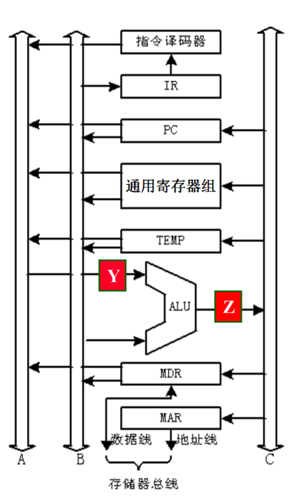
eg2:
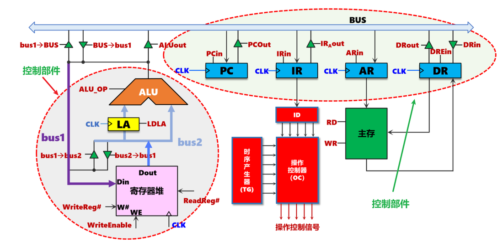
5.3.3.3 专用数据通路方式
上面介绍的总线结构计算机中，由于所有功能部件都需要通过内总线进行数据传递，因此总线成为竞争性资源，为避免总线数据冲突，需要频繁地分时使用总线，直接导致很多操作不能并行，效率较为低下。此外目前,几乎所有处理器都采用流水线方式执行指令,而采用上述单总线或多总线方式连接的数据通路很难实现指令流水执行。因此目前计算机中普遍采用专用通路结构的数据通路来提升性能，根据指令执行过程中的数据和地址的流动方向安排连接电路，避免使用共享的总线，性能较高，但硬件量大。
后面介绍的是采用专用数据通路的单周期处理器设计以及流水线数据通路（安排在下一章）。
eg:
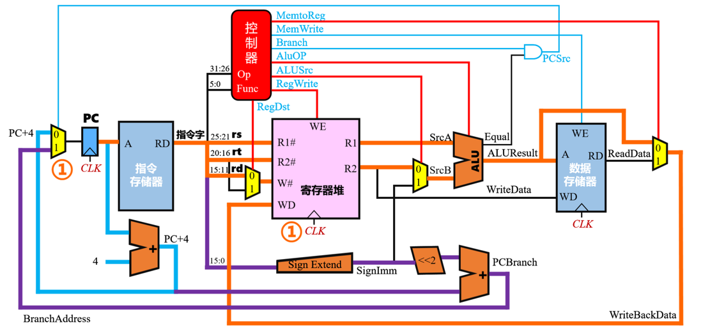
5.4 单周期处理器设计
推荐视频：
1. 扫码观看即可
- 零壹考研【冲高分必看：超难点单周期CPU详解「计算机考研408计算机组成原理」】 https://www.bilibili.com/video/BV1MH4y1q7nn/?share_source=copy_web&vd_source=b3684151350126e612708dc5a756f871
最为典型的专用数据通路结构就是单周期MIPS处理器，单周期MIPS处理器是指所有指令在一个时钟周期内完成的 MIPS处理器。尽管不同指令的执行时间可能不同，但基于木桶原理，单周期处理器的时钟周期取决于执行速度最慢的指令。由于只能在一个时钟周期内完成指令的取出和执行操作，指令执行过程中数据通路的任何资源都不能被重复使用，都应该是专用的数据通路，需要被多次使用的资源(如加法器)都需要设置多个;取指令和取操作数操作都需要访问存储器，因此将指令和数据分别存放在指令存储器和数据存储器中，以避免资源冲突。
取指令部件的设计
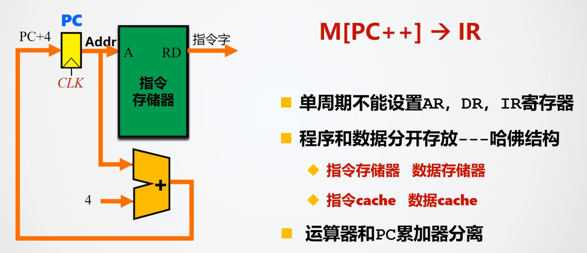
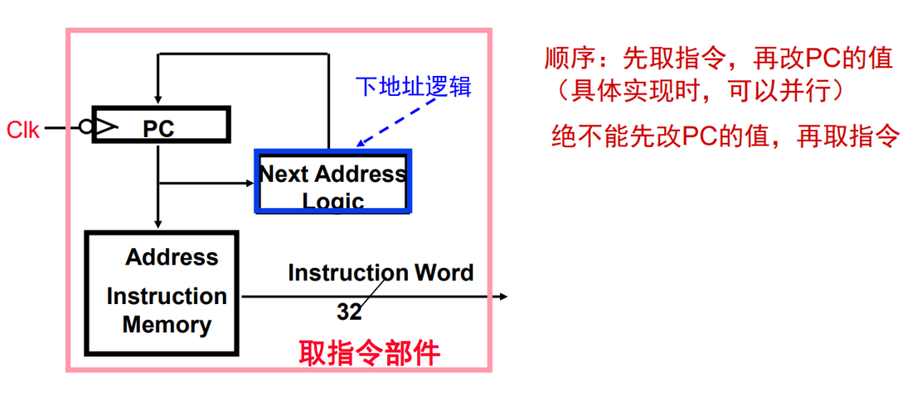
按照时钟周期的定义，信号从一个状态单元经组合逻辑到达另一个状态单元。⽐如add r1，r2，r3指令，信号从 第⼀个状态单元PC出发，最终的计算结果存⼊寄存器中。 在取指令时，需要有⼀个访问指令Cache的操作。但受限于单周期处理器的整个数据通路中只可以存在两个状态单元，若想满⾜这个特点，指令Cache就不能当作状态单元。否则将⽆法满⾜单周期处理器的定义。 为了解决这个问题。指令Cache被设计成只读的组合逻辑单元，CPU不能对指令Cache执⾏写操作，只能执⾏读操作。
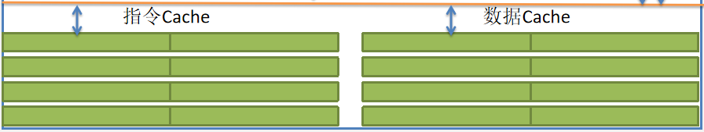
由于指令存储器是只读的，因此单周期处理器将其设计为无须控制信号的控制，只要给出指令地址，经过一定的“取数时间”后，指令被送出。
从v佬聊天记录学的，在单周期处理器中，除了写寄存器堆操作、sw指令的写数据存储器以及PC自增这三个操作是时序逻辑操作，其余的像是从指令存储器中取指令，从寄存器堆中取数等都是组合逻辑操作。
有同学对组合逻辑不理解，举个例子，写寄存器，得有个控制信号，总线里的数据才能写进去，对吧？但是单周期处理器，它在一个时钟周期内要执行完整条指令，控制信号在一个时钟周期内必须保持不变，对吧？所以你如果数据想要从A到B再到C，就不能先Aout Bin 再Bout Cin，对吧？组合逻辑就是一个固定的电路，比如ALU，你只要给两端输入再给一个运算控制信号，它自己就可以在输出端给出输出结果，·而不需要等一个时钟周期，但是这样一来ALU输出端也没了保存功能，因为两个输入端或者控制信号一变，输出端也会跟着变，对吧？而寄存器之所以有保存功能，是因为入口出口处有三态门，相当于一个大坝，控制信号可以决定三态门是否流通。存储器的数据读进寄存器需要控制信号也是打开了中间阻隔的三态门。
现在既然指令一定会被读出来，并且操作码部分会被送入控制器生成控制信号，rs、rd会被送到寄存器堆，立即数会被送入到符号扩展单元，那就没必要在中间设置三态门，因此也不需要额外的控制信号，pc一变，自然就会产生对应的控制信号和寄存器编号、立即数之类的信息，不同部件之间用专用数据通路连接起来。
在多周期处理器中，取值阶段根据PC的值将指令存⼊IR中，其取指微操作和控制信号如下：
时钟周期 | 数据通路（数据流） | 控制信号（控制流） |
C1 | (PC) → MAR | PCout，MARin |
C2 | M(MAR) → MDR (PC)+1 → PC | read，PCinc（PC+1） MDRin |
C3 | (MDR) → IR | MDRout，IRin |
在单周期处理器中，取指阶段直接将指令输出，具体来说，是将指令中的控制信号，立即数，源操作数和⽬的操作数等直接送到相应的处理部件。具体如何送往看后面的综合图。另外，因为是单周期处理器,每个时钟周期执行一条指令,所以每来一个时钟,PC 的值都会被更新一次,因而,PC 无须“写使能”信号控制。下地址逻辑中,要区分是顺序执行还是转移执行。若是顺序执行,则执行 PC+4;若是转移执行,则要根据当前指令是分支指令还是跳转指令来计算转移目标地址。
R型指令的数据通路
MIPS 中的算术逻辑运算指令属于R型指令，下面以加法指令为例。
add rd,rs,rt #RTL功能描述:R[rs]+R[rt]一R[rd]指令执行过程中涉及的功能部件主要包括寄存器堆和ALU。主要功能：
- 将从指令存储器读出的指令字中的源寄存器字段rs、rt分别送入寄存器堆的两个读寄存器编号端R1#、R2#
- 将目的寄存器字段rd送入寄存器堆的写寄存器编号端 W#
- 将从寄存器堆读出的两个源寄存器的值经R1、R2端口输出到运算器;
- 指令字中的funct字段决定AluOp控制 ALU 进行相应的运算(这里应选择加法)，运算结果被送入寄存器堆的写数据端口WD，时钟上跳沿到来时会将运算结果写入目的寄存器rd中，其数据通路如下图所示。
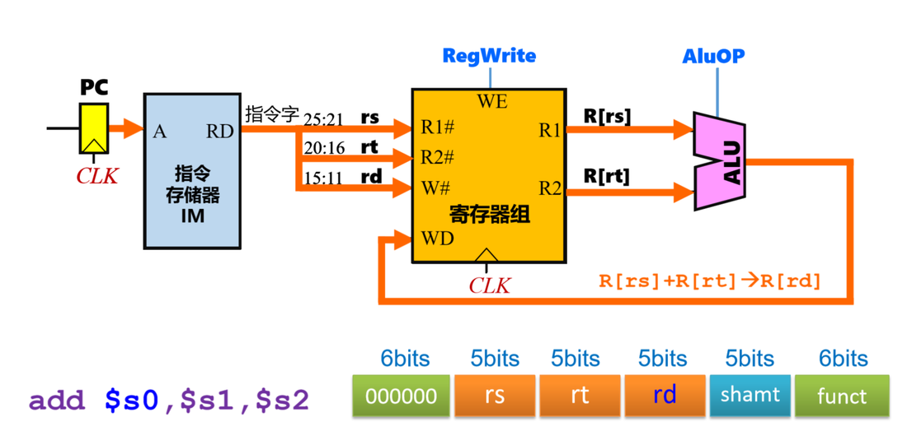
由于单周期MIPS处理器必须在一个时钟周期内完成指令，因此这里没有设置指令寄存器IR,而是将指令存储器中取出的指令字直接进行解析,否则仅取指令到IR中就需要一个时钟周期。图中 RegWrite 是寄存器堆的写使能控制信号，此时应设置为1，控制数据写回。AluOp是ALU 的多位运算选择操作码，用于控制运算器进行何种运算，可由指令字的funct字段译码得到。
寄存器堆的具体介绍上面有，在单周期处理器中，GPRS既允许执⾏读操作，也允许执⾏写操作。若执⾏读操作时，寄存器组当作组合逻辑部件。若需要写寄存器时，CPU给出写信号，寄存器组此时变成状态逻辑部件。
I型指令的数据通路
MIPS访存指令属于I型指令，包括如下取数据和存数据两类，以字访问指令为例。
lw rt,imml6(rs) #RTL功能描述:M[R[rs]+SignExt(imml6)]→R[rt]
sw rt,imml6(rs) #RTL功能描述:R[rt]→M[R[rs]+SignExt(imml6)]Iw 访存指令的数据通路
- Iw 访存指令需要使用的操作数包括变址寄存器rs、目的寄存器rt和16位地址偏移量imm16
- 将指令字中的rs字段仍然送入寄存器堆的 R1#端;将目的寄存器字段rt送入寄存器堆的写寄存器编号端W#;
- 另外要将16位立即数imm16通过符号扩展单元转换成32位后送入ALU,与变址寄存器rs的值相加形成最终的访存地址
- 然后读取数据存储器中的数据并送入寄存器堆写数据端口WD。
如下图所示为Iw 指令操作的部分数据通路，其数据通路涉及的功能部件包括指令存储器、寄存器堆、符号扩展单元、ALU、数据存储器等，需要注意的是Iw指令中rt字段变成了目的寄存器。寄存器堆的写使能控制信号RegWrite 应设置为1，用于控制数据写回;AluOp 应该设置为加法操作;而数据存储器写使能控制信号WE应该为0，用于控制存储器进行读操作。
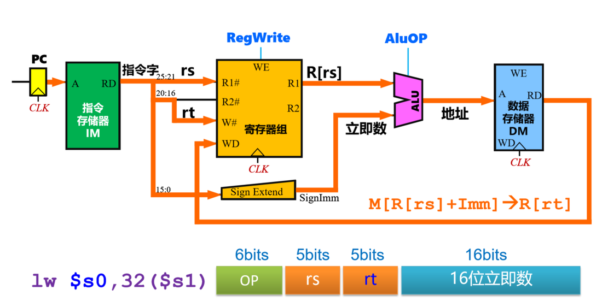
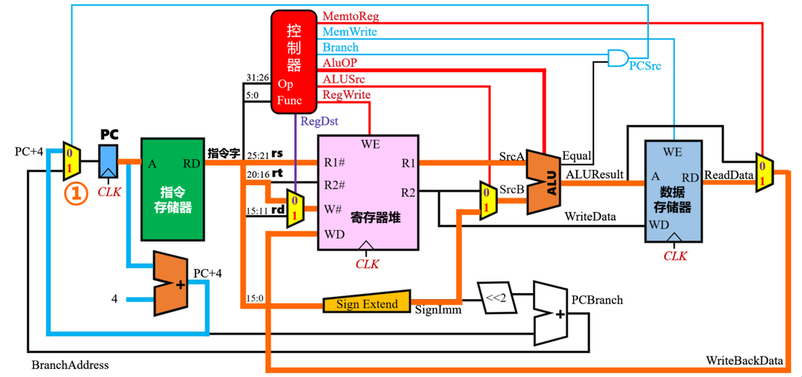
sw 访存指令的数据通路
- sw 访存指令需要使用的操作数包括变址寄存器rs、源寄存器rt和16位地址偏移量imm16；
- 将指令字中的rs、rt字段分别送入寄存器堆的 R1#、R2#端;
- 将16 位立即数通过符号扩展单元转换成32位后送入ALU，与变址寄存器rs的值相加后形成最终的主存地址;
- 将从寄存器堆读出的rt寄存器的值送入数据存储器写数据端口WD。
如图所示为sw 指令的数据通路。寄存器堆不需要写入，所以RegWrite 设置为0;AluOp应设置为加法操作;而数据存储器写使能控制信号MemWrite 应该为1，用于控制存储器进行写操作。
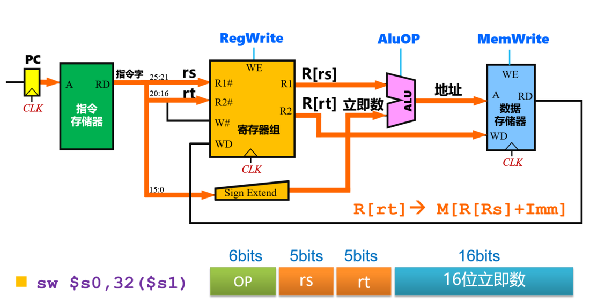
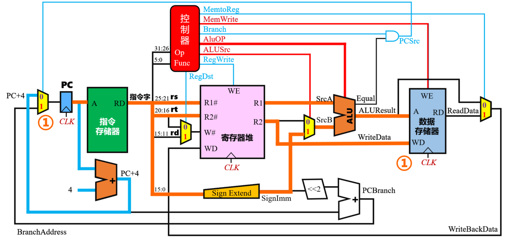
访存指令数据通路中寄存器堆写寄存器编号端口W#、写数据端口WD的输入来源，ALU第二个操作数的输入来源与R型运算类指令数据通路均不同。为了将不同的数据通路统一到同一个电路中以支持两种不同类型的指令，可在有多个输入来源的端口处增加多路选择器，从而得到下图所示的混合数据通路。
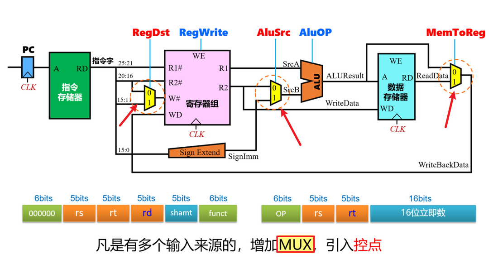
每增加一个多路选择器就会额外引入一个控制信号，这里分别增加了RegDst、AluSrc、MemToReg三个控制信号。其中
- RegDst 用于决定指令字中的rt、rd 哪个字段作为目的寄存器进行写入;
- AluSrc 用于从寄存器或立即数扩展值中选择一个操作数送入 ALU;
- MemToReg用于从ALU的运算结果或主存访问数据中选择一路写回寄存器堆。
各控制信号的具体功能可参考后续表中的详细说明，通过设置这些控制信号的值就可以形成适合不同指令的数据通路，这些控制信号都应该由操作控制器根据指令译码自动生成，在后面将进行更详细的论述。
条件分支指令的数据通路
条件分支指令属于I 型指令，能根据不同的条件进行分支跳转，下面以beq指令为例。
beq rs,rt,imm16 #RTL功能描述:if(R[rs]==R[rt]) PC+4+SignExt(imml6)<<2-PC
bne rs,rt,imml6 #RTL功能描述:if(R[rs]!=R[rt]) PC+4+SignExt(imml6)<<2→PCbeq指令用于比较两个寄存器的值是否相等，若相等则进行分支。指令字中的立即数字段为16位有符号数，是分支目标地址与顺序指令地址PC+4之间的字偏移，可正可负(既可向后跳转，也可向前跳转)。由于指令长度为4字节，因此需要将16位立即数符号扩展成32位后并左移两位生成32位字节偏移量，再加上顺序指令地址PC+4才能得到分支目标地址。为了避免资源冲突，这里需要单独设置一个加法器。当比较条件满足时，用分支目标地址修改PC的内容，即产生分支跳转;反之将PC的值更新为PC+4,程序顺序执行。这里PC输入端也需要增设一个多路选择器，用于选择顺序执行还是跳转执行。
条件分支指令是否发生分支跳转取决于两个操作数的比较情况，为此，条件分支指令数据通路需要同时完成计算分支目标地址和比较寄存器内容的工作。图6.22所示为 beq指令的数据通路。这里 beq指令会译码生成条件分支指令译码信号Branch，将其与ALU的运算结果标志equal(两数相等)进行逻辑与后生成分支跳转信号BranchTaken，BranchTaken用于选择PC的数据来源。如果是bne指令，这里成功分支的逻辑还需要进行适当的修改。
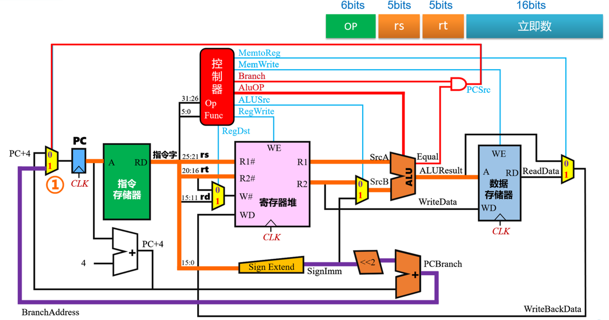
无条件分支指令的数据通路
j Address #RTL功能描述:{(PC+4) Address<<2}-PCj指令一定会跳转，其分支目标地址的计算与条件分支指令不同，具体是将顺序指令地址PC+4的高 4位作为高地址部分并与指令字中的26位立即数Address左移两位得到的28位数据进行拼接，生成一个32位的无条件转移目标地址。图6.24所示为增加了无条件分支指令后的数据通路。注意这里必须在PC输入端处新增一个多路选择器，其选择控制信号为无条件分支译码
信号Jump，为1时 PC送入无条件分支目标地址。该信号应该在执行无条件分支指令时由操作控制器自动生成。
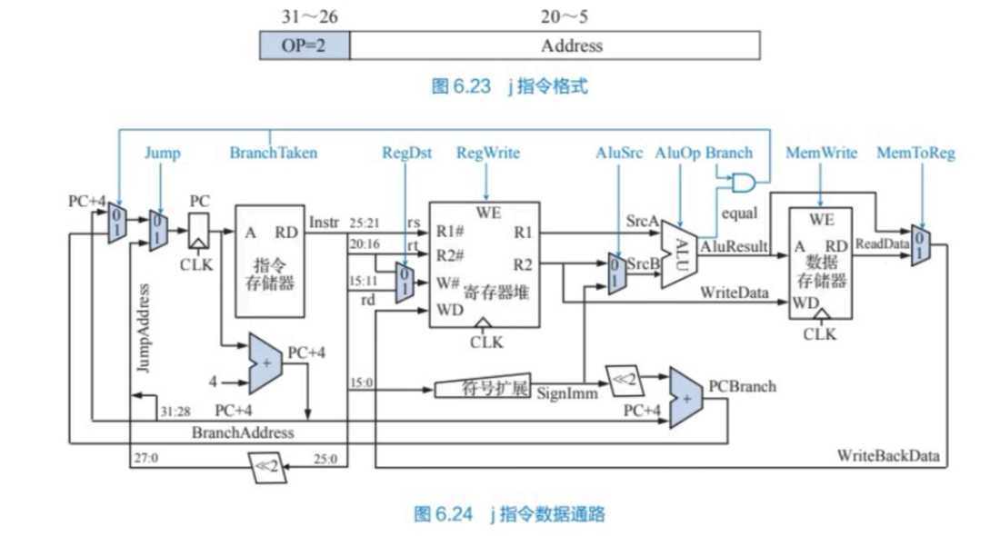
单周期数据通路的操作控制
将各类指令的数据通路合并，并增加必要的控制线路，就可以得到能支持MIPS32指令系统子集的完整数据通路。该数据通路中各功能部件的控制信号、多路选择器选择控制信号、指令译码信号都由操作控制器根据指令字译码自动生成。下图所示为一种基于单周期方案的数据通路高层视图，下面对图中的数据通路进行简单说明。

①PC、寄存器堆、数据存储器受统一时钟控制，上跳沿有效。
②指令存储器为只读存储器，指令直接从指令存储器中读出，不用设置IR 寄存器。
③ALU操作控制端AluOp共4位(S3~S0)，由于单周期 MIPS处理器中ALU只负责与指令主要功能相关的运算，如R型运算指令中的运算、条件分支中的条件判断，因此 AluOp的值应由操作控制器根据指令操作码字段opcode以及funct字段的值译码产生。
④单周期MIPS操作控制器是组合逻辑电路，输入为指令字中的 opcode字段和funct 字段，输出为执行指令需要的8个操作控制信号，相关控制信号的功能如表所示。要注意的是对于多路选择控制信号，0和1均表示有效信号，以选择不同的输入作为输出。对其他信号来说(如RegWrite)，1表示有效，0表示无效。不同类型控制信号的这些差别在设计控制器时要注意区分,将在后续的“硬布线控制器”中介绍控制器的设计。
表：单周期 MIPS 处理器的控制信号及功能
控制信号 | 信号分类 | 功能说明 |
Jump | 指令译码信号 | j、jal等无条件分支指令时生成 |
Branch | 指令译码信号 | 分支指令译码信号，beq、bne指令需要产生类似的译码信号 |
RegDst | 多路选择控制 | 写入目的寄存器的选择，为1时写入rd寄存器，为0时写入rt寄存器 |
AluSrc | 多路选择控制 | 控制ALU的第二输入，为0时输入rt寄存器，为1时输入扩展后的立即数 |
MemToReg | 多路选择控制 | 为1时将从数据存储器读出的数据写回寄存器堆，否则将运算结果写回运算器 |
RegWrite | 功能部件控制 | 控制寄存器堆写操作，为1时数据需要写入指定寄存器，受时钟驱动 |
AluOp | 功能部件控制 | 控制ALU进行不同运算，具体取值和位宽与ALU的设计有关 |
MemWrite | 功能部件控制 | 控制数据存储器写操作，为1时进行写操作，为0时进行读操作，写入受时钟驱动 |
单周期处理器性能分析
单周期MIPS处理器每个时钟周期执行一条指令，CPI=1，看似性能很好，但由于该处理器的时钟周期对所有指令等长，因此只能以执行速度最慢的指令作为设计其时钟周期的依据。
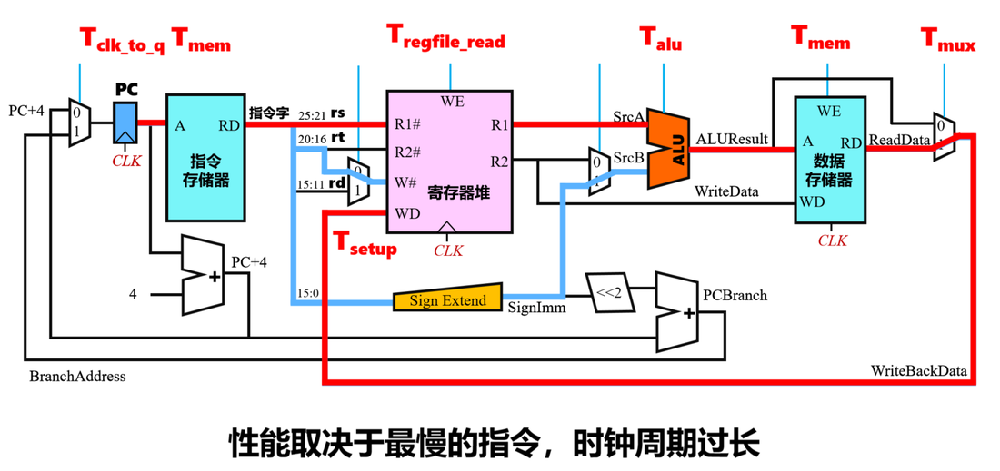
单周期MIPS处理器存在的问题:
- 第一是时钟周期长，程序执行效率不高;
- 第二是硬件实现效率不高，为了在ALU运算的同时计算指令顺序地址和分支目标地址，增设了两个加法器，而加法器的电路是相对占用芯片晶圆面积较多的电路;第三是指令存储器和数据存储器分离结构与实际存储系统的并不相符。
单周期处理器仅仅出现在早期的简单小指令集系统中，现代处理器中已不再采用单周期方式设计处理器，取而代之的是多周期处理器或更高级的指令流水线。指令流水线将在下一章进行详细讲解。不过相对于共享型的单总线结构，采用专用数据通路的单周期MIPS处理器仍具有较大的性能优势。
【模拟题替补】：某单周期处理器的数据通路由组合逻辑元件（操作元件）和时序逻辑元件（状态元件）组成，如下图所示，其中PC、寄存器堆、数据存储器受统一时钟控制，上跳沿有效。指令存储器为只读存储器，指令直接从指令存储器中读出，不用设置IR 寄存器。
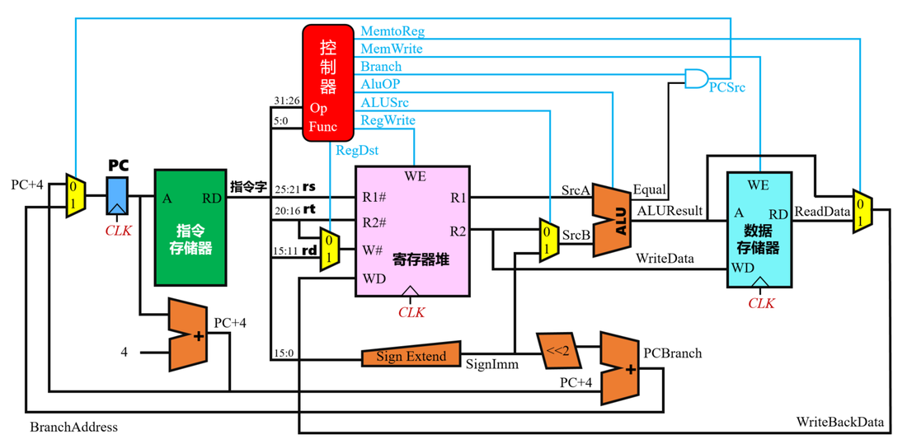
在该单周期处理器中，常见的指令有
add rd,rs,rt #RTL功能描述:R[rs]+R[rt]一R[rd]
lw rt,imml6(rs) #RTL功能描述:M[R[rs]+SignExt(imml6)]→R[rt]
sw rt,imml6(rs) #RTL功能描述:R[rt]→M[R[rs]+SignExt(imml6)]
beq rs,rt,imm16 #RTL功能描述:if(R[rs]==R[rt]) PC+4+SignExt(imml6)<<2-PC
bne rs,rt,imml6 #RTL功能描述:if(R[rs]!=R[rt]) PC+4+SignExt(imml6)<<2→PC
j Address #RTL功能描述:{(PC+4) Address<<2}-PC在下列这些操作中，哪些操作属于组合逻辑操作（）
I：PC里的地址送入指令存储器取指令
II：在执行sw指令时，将从寄存器堆读出的rt寄存器的值送入数据存储器写数据端口WD写入
III：从寄存器堆中取数
IV：立即数经过符号扩展单元sign Extend执行符号扩展
V：在执行lw指令时，从数据存储器中取数
VI：通过ALU计算转移地址
VII:在执行lw指令时，将从数据存储器中取出的数据送入寄存器堆写数据端口WD 写入
A：I、IV、VI
B:II、VII
C:I、III、IV、V、VI
D:I、II、III、IV、V、VI、VII
解析：本题选择C 。不懂的来问我。